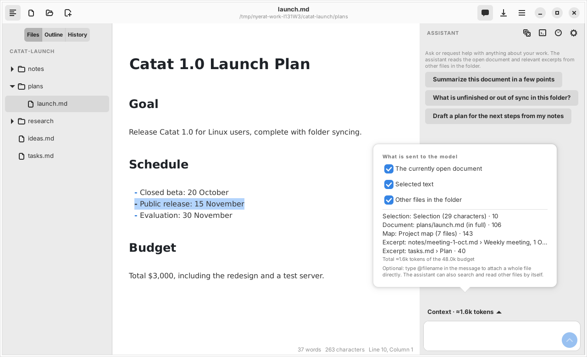

Agent
Context and privacy
The model only knows what is sent. Nyerat builds the context automatically from the workspace, shows it to you, and gives you switches to limit it.
The automatically built context
Every question builds a new context, because the manuscript can change between questions. The order of priority:
| Part | Contents | Budget limit |
|---|---|---|
| Selection | The text that is currently selected | 8% |
| Active document | The editor contents, including unsaved ones; when long, a window around the cursor | 40% |
@file attachments | The whole files you mention | 20% per file |
| Project map | The name, word count, and headings of every Markdown file in the folder | 6% |
| Relevant excerpts | The parts of other files that best match the question (at most 10) | 40% |
The total budget is 48,000 tokens. Relevant excerpts are found with BM25 from the keywords of the question, the selection, and the two previous questions. There are no embeddings, so no model is downloaded and the manuscript is not sent just for searching.
Every line of the manuscript is given its original line number, so the agent's quotes point to the right line.
Attaching files with @
Write @filename in the message to attach a whole file from the first message on. The agent does not need a browsing round to read it. Even without @ the agent can still search and read files by itself.
The Context button
The Context button below the panel details what will be sent with its estimated tokens, and has three switches:
- The currently open document
- Selected text
- Other files in the folder: when turned off, the agent gets no read tools and no proposal tools at all

What is sent to DeepSeek
Turn off the Other files in the folder and The currently open document switches to ask without sending documents.
- Dot folders (including
.nyerat/) andnode_modulesare not read as manuscript. - The agent log and the model's thinking process are not sent to the model again and are not saved to files.
- The API key is not written to the app settings.
Prefix cache
The context is split so that the DeepSeek prefix cache is used: the instructions, the project map, and the active document are in a stable system message; the selection, the cursor, the attachments, and the relevant excerpts are in the user message. The part served from the cache is shown in the token details of every answer.